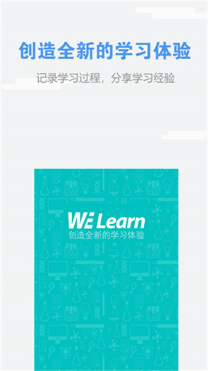
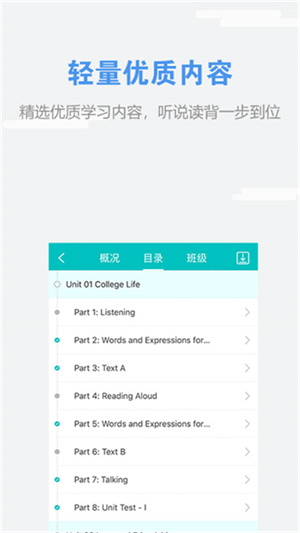

WE Learn 随行课堂快问快答：从激活到录音，八件事说清
整理一篇关于 WE Learn 随行课堂的问答速查——谁该装、怎么激活、录音为什么不行、验证码报错怎么办，以及听力练对了没有，一次答透新手最常踩的坑。
整理一篇关于 WE Learn 随行课堂的快问快答——如果你是手里攥着外研社教材但还没搞明白这个 APP 到底值不值得装、怎么装、装完第一步该做什么的同学，下面这八组问答应该能把你最想问的事一次说清。
一、WE Learn 到底是什么？谁该装？
WE Learn 是外研社推出的外语教材配套学习平台，官网上的正式名称叫「随行课堂」。它不是一个泛泛的背单词 APP，而是为外研社出版的各类外语教材量身定做的练习与测试系统——教材封面的刮刮验证码就是激活它的钥匙。
如果你正在用的外语教材来自外研社（比如《新视野大学英语》《现代大学英语》《新标准英语》等系列），那这个 APP 基本上是必装的原因：任课教师布置的单元测试、听力作业、朗读评分、形成性评价全在上面做，不装等于平时分直接丢掉。如果不是外研社体系的教材，装了也用不上它的核心功能，可以跳过。
二、怎么装？安装过程中要注意什么？
直接去手机应用商店搜「随行课堂」就能找到，也可以从we learn下载拿安装包确认一下版本号。安装时会依次请求通知、麦克风、相册等权限——麦克风权限一定要当场允许，口语跟读和朗读评分全靠它，事后去系统设置里补权限多一次操作，更麻烦。

装完第一次打开 APP 会让你注册或登录，手机号注册即可。登录后别急着找练习题，先把教材背面的 16 位验证码激活成一门课程——激活路径在 APP 首页或「学习」Tab 里都能找到「添加课程」的入口，输完码课程就会出现在你的学习列表里。验证码一码绑一账号，从正规渠道买新书最省事，二手书要先确认验证码没刮开、没被用过。
三、激活课程时弹「验证码无效」或「已被使用」怎么办？
先别慌着联系客服——这两类报错的绝大多数原因能自己定位，按下面的顺序排查最快：
「验证码无效」最常见的原因是字符混淆：数字 0 和字母 O、数字 1 和字母 I、数字 8 和字母 B 刮开后长得太像。对着光从不同角度看刮开区，拿不准的组合换另一种试试，大概率能输对。其次是册次拿错——第三册教材的码去激活了第二册的课程，核对一下教材封面的系列名和册数就能确认。
「验证码已被使用」只有一个规则：一个验证码只能绑一个账号。先回想一下是不是自己之前用另一个账号激活过、现在换主账号又来输一遍；如果是二手教材，前任书主大概率已经用掉了；如果确认书是全新的却报已使用，可能是码被泄露抢注，这时才需要找客服申诉，记得备齐教材封面、封底、刮开的验证码和购书凭证。
四、录音功能为什么录不上？麦克风排查四步走
录音是随行课堂里对设备要求最高的功能——口语跟读、朗读练习、录音作业全靠它。录不了音按这四步排，绝大多数当场能解决：
第一步查麦克风权限：当时点了拒绝就去手机系统设置 → 应用管理 → 随行课堂 → 权限 → 麦克风，改成允许；嫌麻烦直接卸载重装，安装弹窗时注意点对。第二步查网络：录音对网络要求高，音频要实时上传评分引擎，校园网高峰期切手机流量试试，Wi-Fi 信号弱的位置换近点。第三步查设备占用：录音是独占资源，语音通话、其他录音软件、后台音乐的语音功能都可能占着，退出这些 app 或者直接重启设备最省事。第四步交叉验证硬件：用系统自带录音机录一段，能录说明硬件没问题，问题锁定在 APP 或权限。
以上全试过还不行，换一台设备登自己的账号试试——录音练习与账号绑定，换设备不影响记录；确认 APP 是较新版本，旧版本有兼容问题。
五、听力练习到底该怎么练才对？
随行课堂的听力不是一堆散题，而是跟着单元走的固定路径——每单元从策略到检验层层递进，理解了这条路径你就知道每节课该从哪里进、做到哪里算完。
以视听说类课程为例，单元内的听力板块按这个顺序排列：先看 Listening Strategy（听力策略），讲本单元材料的听法要点（比如抓关键词、预判场景），题量小但不能跳过，先看再做正确率明显更高；然后 Pre-listening Task（听前任务） 用短材料激活背景知识；接下来是主干练习 Conversation 和 Passage 交替做——会话练抓对话信息，篇章练长段理解，交替进行不容易疲；做完听力转 Speaking Tasks 口头输出，材料和听力同场景；之后是 Video Course 视听扩展材料；最后 Test Your Listening（听力测试） 单元收口检验。

实操建议：做错的题一定要回听原文再提交——APP 音频可以反复播放，错题回听一遍记忆效率高于直接看答案；课程目录里每个单元会显示已完成练习的数量，进度落下了从最近的未完成练习补起就行，不用从头再来。近期版本更新新增了听力专项训练模块，不再局限于某本教材的单元内练习，备考或想集中攻坚听力的同学可以在 APP 内找这个入口。
六、作业期限过了还能交吗？成绩不对找谁？
作业期限由任课教师在后台设置，过了期限系统一般会自动关闭提交通道——要不要补交、能不能补交，直接找任课教师，不归 APP 管。随行课堂只是执行教师的设置规则，没有什么隐藏的补交按钮可以绕过。
「成绩不对」也是高频困惑。先与任课教师核对评价设置——多数"成绩不对"是口径理解偏差而非系统错误：教师设置的形成性评价权重（比如听力占 40%、口语占 30%、测试占 30%）和你以为的不一样，算出来的分数自然有出入。系统本身的评分（尤其是客观题和口语 AI 评分）出错概率很低，先确认统计口径再联系客服。
七、自己排查无果，怎么联系客服才高效？
官方在多处说明里都给了同一句指引：「使用平台中遇到任何问题，用户可直接通过 app 或者网站的『联系客服』功能联系客服」。APP 内入口在「我的」或设置区域，网页端课程中心也有同样的入口。发问前也可以先去中文文档的自助排查清单过一遍，相当一部分问题能就地解决。
客服每天处理大量开学季咨询，一次把信息给全，处理速度天差地别：账号信息（注册手机号或账号名）、课程凭证（绑定的 16 位验证码或二维码，账号归属查询的硬凭证）、问题描述（写具体——"激活课程时提示验证码已被使用"远胜"用不了"）、环境信息（设备型号、系统版本、APP 版本号或浏览器名称）、证据截图（报错弹窗、异常页面的完整截图）、已试过的排查（"已切网络、已重启、已重装"——帮客服跳过基础排查）。
开学季整体偏慢，账号归属类需要验证码核验的问题处理周期稍长，提前预留时间。涉及成绩统计的问题先找任课教师，教材购买与退换找购书渠道，这两类事不归客服管。
八、和同类 APP 比，WE Learn 值得装吗？
如果你是外研社体系的学生——没得选，必须装，平时作业、单元测试、期末形成性评价全在上面，绕不开。如果不是外研社教材的学习者，它的核心练习功能对你来说就是一座空壳，装了也用不上。
和其他背单词或听说训练 APP 比，WE Learn 的优势在于与教材绑定的深度和 AI 评分的精度——它的口语跟读评分引擎经过多年迭代，对发音语调的判断比很多通用听说 APP 更准，而且能直接与你的教材进度同步，不用自己规划学习路径。劣势在于灵活性为零——你没法换教材、没法自定义练习内容、没法导出学习数据，所有内容完全由任课教师和教材决定。
所以结论很简单：外研社体系的同学，装；其他体系，跳过。
最后一句，如果你手里有外研社的新书验证码，WE Learn 随行课堂是目前唯一能把这张券用到位的地方，别让它在抽屉里积灰。关于这款软件的资源整理，GitHub 是主版本，国内访问可以走 Gitee，GitCode 也同步了一份备份，各仓库都能直接找到对应当前这篇文章提到的材料。